Що вже працює, що гальмує записи і що змінити першим. Усі цифри зняті з публічної сторінки @halynakramarieva 30.10.2026.
У вас є те, чого бракує багатьом: широкий прайс із високим чеком, навчання й конференції і рілси, де ви в кадрі. Гальмують три речі: кнопка запису веде в канал без контактів, стрічка більше про бренд догляду, ніж про ваші процедури, і під двома «до/після» Instagram показує мітку «ШІ-контент».
Ліворуч ваша сторінка зараз, праворуч та сама сторінка після зміни. У кожній парі змінено одне. Натисніть на екран, щоб відкрити його в повному розмірі.
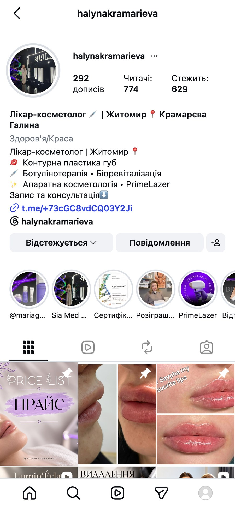
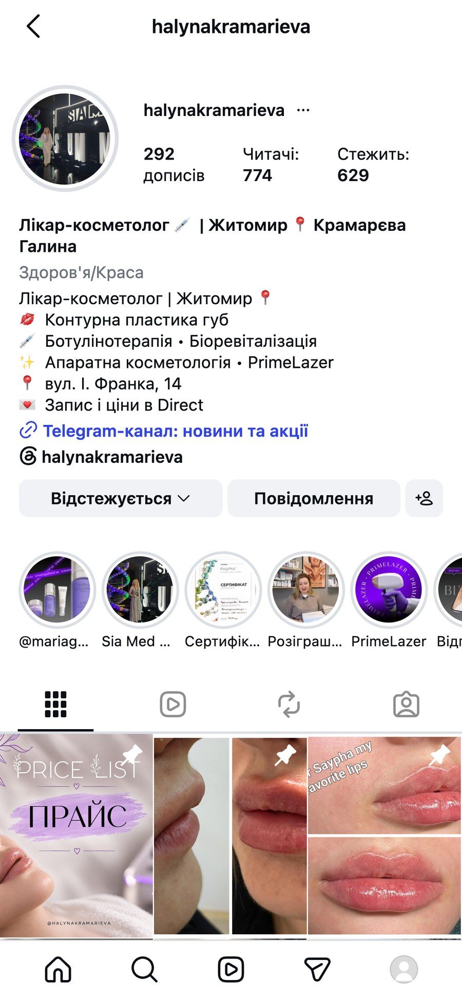
Зараз «Запис та консультація» веде в Telegram-канал без контактів (185 підписників), а в дописах написано «Запис у Direct». Варто залишити одну дію, «Запис і ціни в Direct», і додати адресу (взяли з вашого допису 23.09, уточнимо).
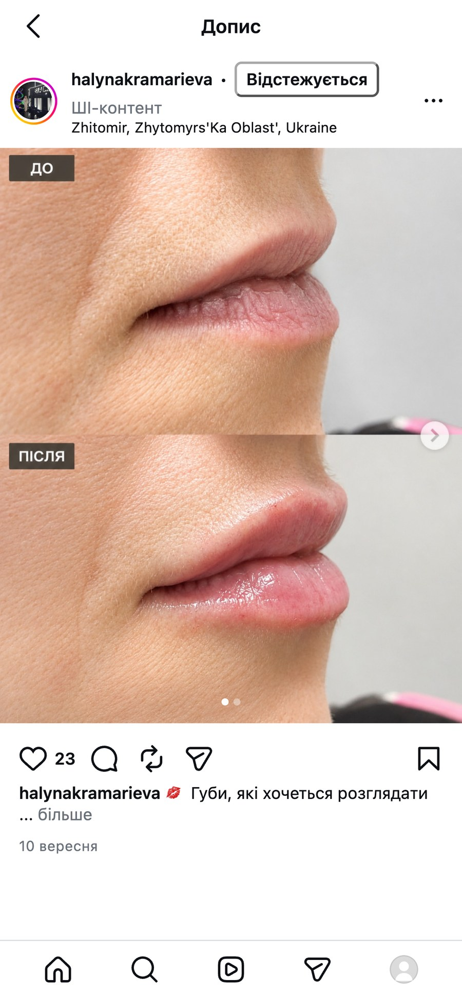
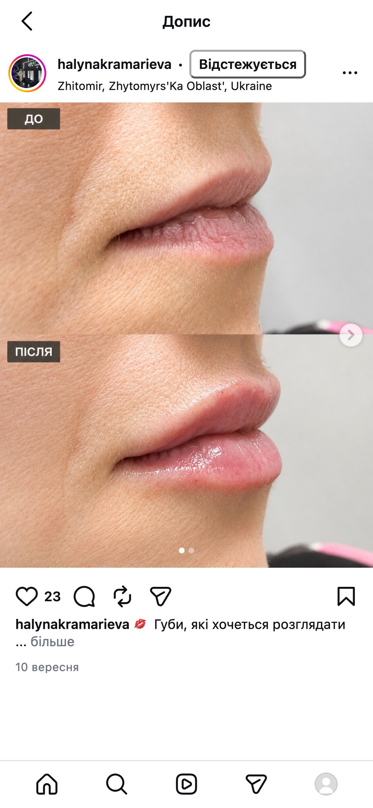
Instagram позначив «ШІ-контент» 9 дописів, серед них цей «до/після» губ від 10.09. Результати публікуємо лише реальними фото, тоді мітки немає. В опитуванні 8 000 людей 31% сказали, що видимий ШІ-контент знижує їхню довіру.
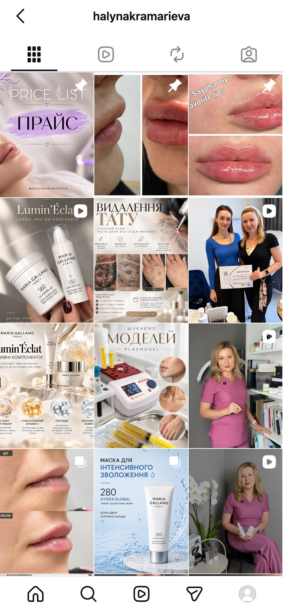
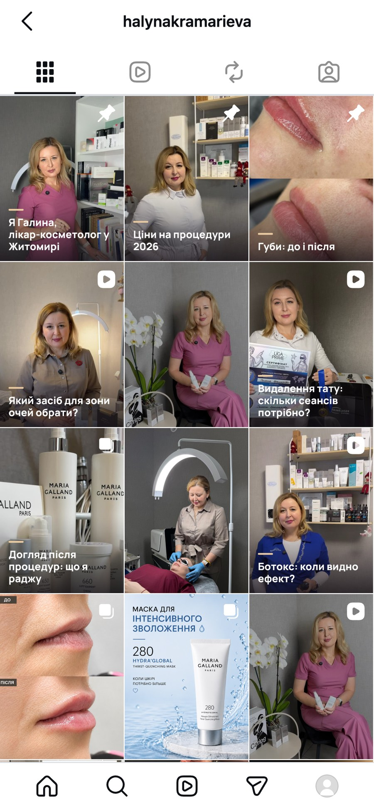
17 з 55 дописів за рік рекламують засоби Maria Galland. Варто показувати ваш кабінет, процедури з прайсу й однаковий гачок на обкладинках, а засоби лишити як один допис із чотирьох. Сітку «як варто» зібрано з ваших реальних кадрів.
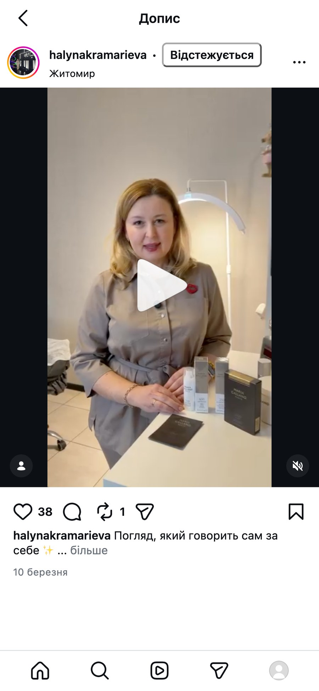
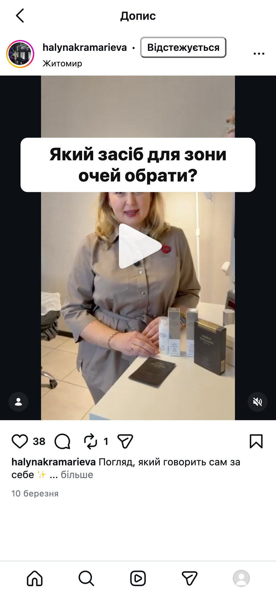
Найкращі ваші рілси ті, де ви в кадрі (5 з 7 топових), але тему видно не з першої секунди. Тут ви розповідаєте про засоби для зони очей (10.03, 1 646 переглядів). Варто винести це питання текстом на перший кадр.
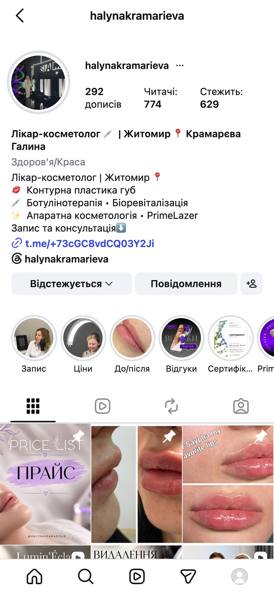
Зараз першими стоять бренд і конференції, а «Відгуки» востаннє оновлені 56 тижнів тому. Варто: Запис, Ціни, До/після, Відгуки з обкладинками з ваших фото. Назви до 10 символів, щоб Instagram їх не обрізав.
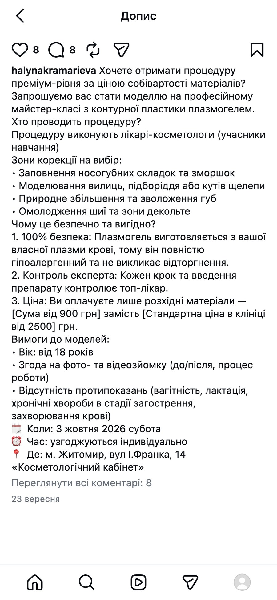
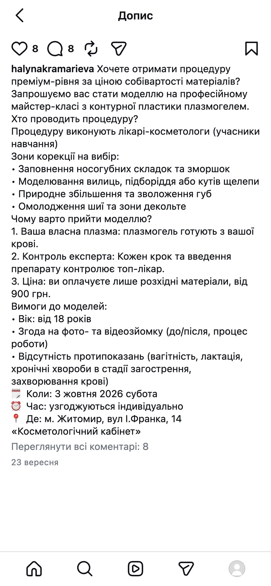
У дописі 23.09 лишились дужки шаблону «[Сума від 900 грн]…» і фраза «100% безпека». Варто публікувати чистий текст без абсолютних обіцянок: для лікаря вони ризиковані юридично.
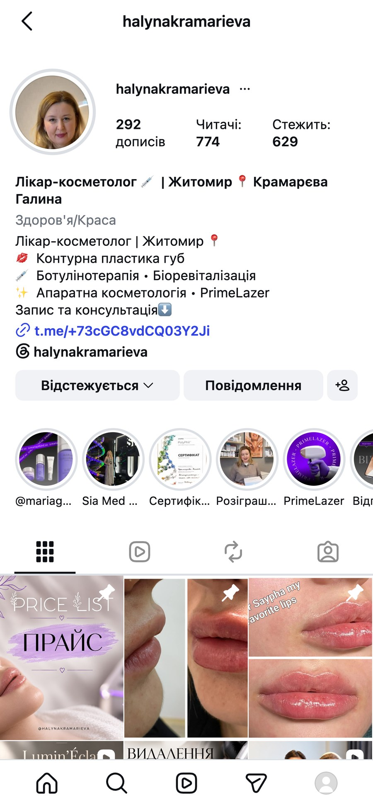
На аватарі ви на повний зріст на сцені, і в маленькому колі обличчя не видно. Варто поставити обличчя крупним планом (кадр з вашого ж рілса): аватар видно в кожному коментарі, сторіз і пошуку.
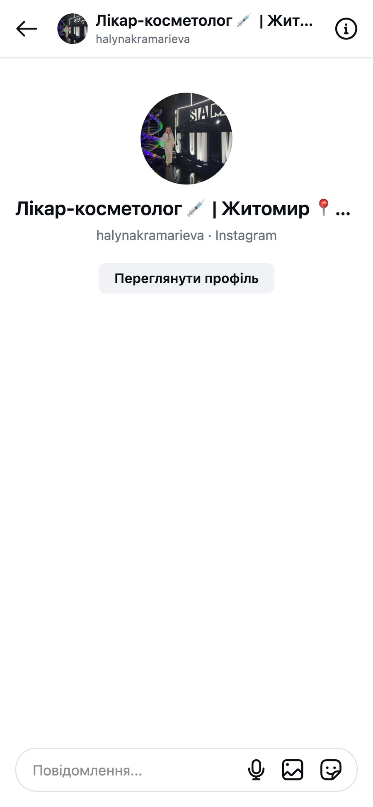
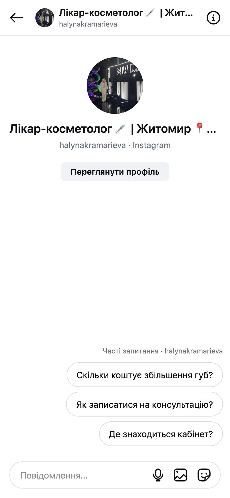
Зараз нова клієнтка відкриває порожній чат і сама вигадує, що написати. Варто увімкнути «Часті запитання» в Instagram: ціна, запис, адреса одним натисканням. Відповіді підготуємо за вашим прайсом.
У пошуку Instagram за шістьма запитами («косметолог житомир», #косметологжитомир, #житомиркосметолог, «ботокс житомир», «губи житомир», «косметологія житомир») у видачі дописи інших косметологів, ваших там немає. Ось кого показує пошук і що в них працює.
«Один день разом зі мною. Косметолог у Житомирі» (19 682 перегляди) і «Ботокс чи філер? Показую на своєму обличчі» (10 027). У шапці одна дія: «Запис і ціни» з онлайн-записом.
Гачок на обкладинці «Я стала жертвою косметології» (10 470) і процес губ крупним планом (7 304). Вона амбасадорка Totis Pharma, але стрічка про її процедури, а не про засоби.
Відповідає на страхи клієнток: «Ботокс не працює?» про корекцію через 14 днів (4 869). Тренд-процедура Barbie Botox (5 180). Адреса кабінету прямо в шапці.
Аудиторія майже як у вас, але за місяць 7 дописів проти ваших 4. Найпопулярніше особисте: відпустка (1 938) і день народження (1 793). У шапці «Безкоштовна консультація» і «Запис у Direct або ↓» з особистим Telegram.
30 хвилин дзвінка: покажу план першого місяця і перші 4 теми для зйомки, складені під ваш прайс.